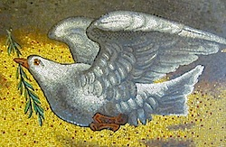

Friends,
Just a quick reminder that there are only ten more days to nominate an individual or organization working for peace -- deadline Saturday, August 1st at midnight!
Each year, the Fellowship of Reconciliation awards three peace prizes -- international, national, and local -- to individuals or organizations whose commitment to peace, justice, and reconciliation is recognized as extraordinary.
Make a nomination for the FOR Peace Awards by midnight on August 1st!
There is no requirement that you or the nominee have any affiliation with FOR, so please spread the word with your networks of peace and justice advocates!
Awards are made in three categories -- you can browse the list of past winners to see who's won before.
International Pfeffer Peace Award: Established in 1989 by Leo and Freda Pfeffer, the award honors an individual or organization working globally for peace and justice.
Martin Luther King Jr. Award: Established by FOR in 1979, the award recognizes a person or group working in the United States in the tradition of Reverend Dr. King's nonviolent approach to transforming racial, social, and economic injustice.
New in 2015! the * LOCAL HERO Award *: Formerly the Nyack Area Peace Award that honored groups or individuals working for peace and justice in the vicinity of FOR's national headquarters in Nyack, NY, this award now celebrates people or organizations working tirelessly for peace and justice in their local communities anywhere in the United States.
2015 is a super special year for our award recipients as the presentations will be made at our 100th birthday party Centennial Dinner Celebration in New York City on November 7th.
Make your nominations now, before submissions close on August 1st at midnight!
In peace,
 Rev. Kristin Stoneking Rev. Kristin Stoneking
Executive Director
Fellowship of Reconciliation
Image: "Dove of Peace," 1727, presented by Pope John Paul II to the United Nations in 1979. (Wikimedia, public domain.) |

{kind=link}